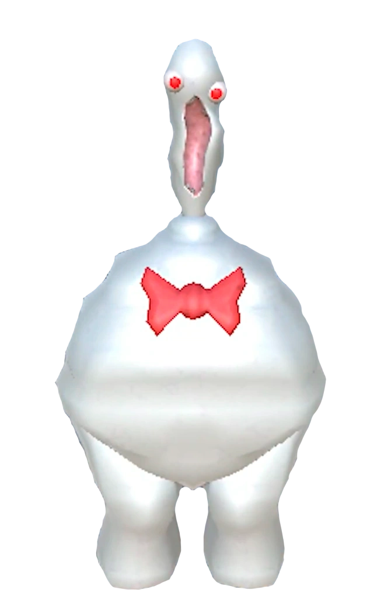

Монстры:
Монстры делятся на 3 класса:лёгкие,средние и сложные.
!Внимание,названия монстров в скобках являются не официальными!
Лёгкие:
Подглядывающий(глаз)-30hp,Когда Глаз обнаруживает цель,он притягивает её взгляд к себе.
Если игрок не освободится за 3 секунды, монстр наносит 2 единицы урона ежесекундно.
Дитя тени(тень)-150hp,Если игрок замечает тень, тот начинает смеяться, после чего экран немного темнеет.
Если продолжать смотреть на монстра ещё 2–3 секунды, он внезапно нападёт, издав резкий звук,
нанеся 30 единиц урона и сильно отбросив игрока назад.
Гном(гном)-20hp,Нацеливается на ценности игрока,ломает предметы уменьшая их стоимость.Если предметов рядос нет,
бежит на игрока нанося ему 10 урона при ударе.
Высший хищник(уточка)-150hp,Замаскирован под уточку, но опасен: при нажатии превращается в монстра, который наносит 10 урона.
Извергатель(рот)-65hp,Заметив игрока, он издаёт булькающий звук и либо приближается к нему, либо кричит, глядя в его сторону.
Через пару секунд «Извергатель» извергает на игрока кислоту, если тот всё ещё рядом. 12Также «Извергатель» может вселиться в голову
игрока на 10–60 секунд, чтобы извергать рвоту,которая наносит повреждения монстрам, предметам и другим персонажам.
Средние:
Руграт(ребёнок)-150hp,Использует ценности игрока против него: если захватит предмет, бросит его в игрока, нанося переменный урон и повреждая предмет.
Животное(таракан)-150hp,Двигается хаотично и непредсказуемо. Он почти никогда не нападает, предпочитая убегать.При столкновении с игроком наносит ему 2 урона.
Громкий крик(голова на ножках)-50hp,при обнаружении игрока он начинает громко кричать, создавая ударную волну, которая отбрасывает цель назад и лишает возможности прыгать и бегать. Если во время крика прижать игрока к стене, то он получит урон.

Шеф-повар(лягушка)-250hp,Лягушкоподобный повар с атакой наносящей 10 урона за каждый удар. Как только заметят игрока, фиксируются на нём и прыгают с размахивающими ножами, нанося удары несколько раз за прыжок.
Скрытный(невидимка)-100hp,При встрече с игроком невидимка хватает его и уносит в дальний угол локации, при этом персонаж выроняет предметы и оглушается.
Урон невидимка не наносит, но в уязвимом состоянии игрок может повстречать другого монстра. В этом случае его спасёт только своевременное вмешательство напарников.
Галстук-бабочка(йети)-100hp,Использует мощный порыв ветра, чтобы оттолкнуть игрока назад, а если прижмёт к стене, наносит постоянный урон.

Менталист(НЛО)-150hp,Телепортирующийся инопланетянин . Поднимает игрока, товарищей по команде и окружающие объекты в воздух, прежде чем всё сбросить, нанося 50 урона.
Взрыватель(черепок)-50hp,аметив цель, он активирует детонатор, нанося ущерб как игрокам, так и окружающей обстановке. Взрыв наносит урон на расстоянии, а вблизи — смертелен.
У Взрывателей есть два характерных звуковых сигнала: тихий — при запуске 10-секундного таймера детонации, и громкий визг, предупреждающий о неминуемом взрыве.
Сложные:
Староста(голова)-250hp,Голова чувствительна к источникам света. Если направить на неё фонарик, она начнёт агрессивно кричать и бросится на игрока, пытаясь укусить. В случае успешного укуса игрок получит до 50 единиц урона. Дополнительно возможен урон от физического воздействия из-за толчка.
Халат(монашка)-250hp,Бесшумно бродит по уровню, пока не заметит игрока.Когда Монашка находит цель, она начинает медленно преследовать её. Если существу удастся коснуться игрока, находящегося в приседе, оно нанесёт 50 единиц урона, а если игрок стоит — удар будет смертельно опасным, достигая 100 единиц.
Охотник(дед)-250hp,Слепой монстр с атакой, убивающей мгновенно. Ориентируется на звук, любой шум может привлечь его внимание.

Жнец(солома)-250hp,бездумно бродит по локации, издавая характерный звук шагов, напоминающий шуршание сена. Плохо видит, но может заметить игрока. В таком случае он начнёт размахивать клинками и бросится в погоню.При попадании клинком наносит 10 урона.
Клоун(клоун)-250hp,Заметив игрока, он громко смеётся и мгновенно выпускает горизонтальный луч, уничтожающий всё на своём пути. Высота луча адаптируется под рост жертвы.После выстрела требуется перезарядка около 8 секунд. В этот период клоун быстро сближается с игроком и сильно отталкивает его, нанося урон и часто приводя к смертельному падению.Также, если клоун заметит игрока под столом или рядом с собой, он может пнуть его ногой, нанеся урон.
Тащиться(рыцарь)-500hp,Самый устойчивый монстр в игре. Наносит удар на 100 урона и может притягивать игроков.